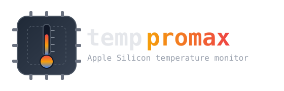

A macOS command-line temperature monitor for Apple Silicon. Reads PMU sensors through the HID Event System — no sudo, no entitlements, no daemon.
Apple Silicon (M-series) · macOS 14+
# Download and extract the latest release curl -fsSL https://github.com/ThatXliner/temppromax/releases/latest/download/temppromax-macos-arm64.tar.gz | tar -xz # Move it onto your PATH sudo mv temppromax /usr/local/bin/ # Run it temppromax
The binary isn't notarized yet. The curl command above
runs without any prompt. But if you download the
.tar.gz from the
releases page
in a browser, macOS quarantines it — clear the flag before running:
# Only needed for browser downloads
xattr -d com.apple.quarantine temppromax
temppromax - Temperature Monitor ----------------------------- Die Temperatures: tdie0 48.2°C tdie1 71.5°C tdie4 91.3°C Device Temperatures: tdev1 42.0°C tdev3 45.8°C System: up 2 days, 6:14, load: 1.42 0.98 0.81 9.2 GB free / 16 GB
Works as any user on Apple Silicon — no root, no password prompt.
Completely public API. Just links IOKit.framework.
Pure user-space, one-shot binary. No launchd helper to install.
Reads actual die, device, and surface PMU sensors from the firmware.
No TTY required. Pipe it, watch it, or emit JSON for scripts.
--json for tooling, --watch for live refresh.
temppromax [--die] [--json] [--watch[=N] | -w N] [--no-color] --die Only show die temperature sensors. --json Print JSON instead of a table. --watch[=N] Refresh in place every N seconds. Defaults to 2. -w N Refresh in place every N seconds. --no-color Disable ANSI color. -h, --help Show this help.